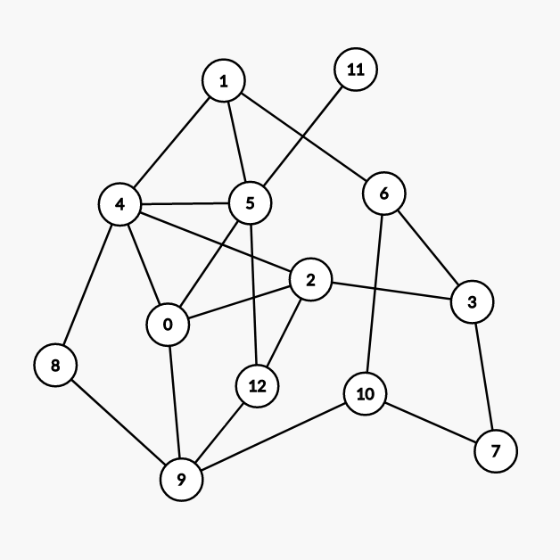
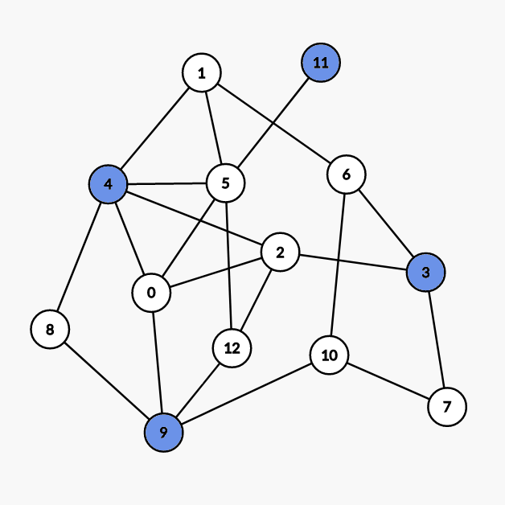
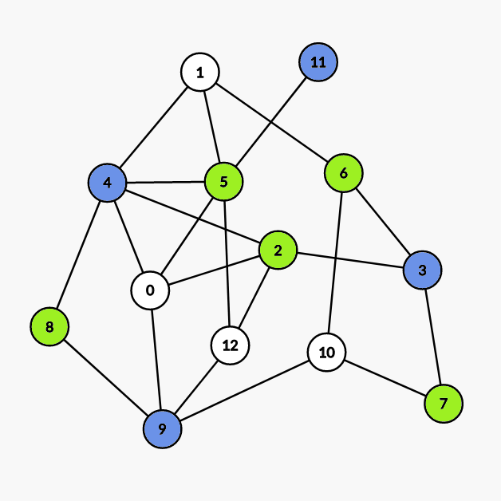
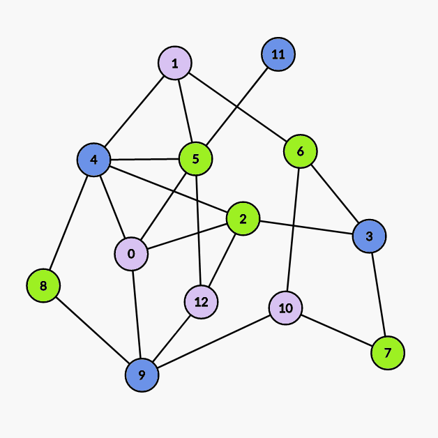

OI Wiki · prijevod · Teorija grafovaOI Wiki · translation · Graph theory
Bojenje grafovaGraph coloring
Sadržaj
Bojenje vrhova
(Razmatramo neusmjerene grafove bez petlji.)
Bojimo vrhove neusmjerenog grafa tako da susjedni vrhovi ne budu iste boje. Ako je G \(k\)-obojiv, ali nije \((k-1)\)-obojiv, kažemo da je k kromatski broj grafa G i označavamo ga s \(\chi(G)\).
Za svaki graf G vrijedi \(\chi(G) \leq \Delta(G) + 1\), gdje je \(\Delta(G)\) najveći stupanj.
Brooksov teorem
Ako povezan graf nije ni potpun graf ni neparan ciklus, tada je \(\chi(G) \leq \Delta(G)\).
Dokaz
Dokaz
Neka je \(|V(G)|=n\); dokazujemo matematičkom indukcijom.
Najprije, za \(n\leq 3\) tvrdnja očito vrijedi.
Pretpostavimo da tvrdnja vrijedi za \(n-1\); sada ćemo tvrdnju postupno pojačavati.
Dovoljno je promatrati \(\Delta(G)\)-regularne grafove, jer se neregularan graf može shvatiti kao regularan graf iz kojeg su uklonjeni neki bridovi, a taj postupak ne utječe na zaključak.
Za bilo koji regularan graf G koji nije ni potpun ni neparan ciklus uzmimo bilo koji njegov vrh v i promotrimo podgraf \(H:=G-v\); po pretpostavci indukcije \(\chi(H)\leq\Delta(H)=\Delta(G)\), pa preostaje dokazati da umetanje v u H ne mijenja zaključak.
Neka je \(\Delta:=\Delta(G)\), neka su \(\Delta\) boja kojima je obojen H redom \(c_1,c_2,\dots,c_{\Delta}\), a \(\Delta\) susjeda vrha v neka su \(v_1,v_1,\dots,v_{\Delta}\). Smijemo pretpostaviti da su boje tih susjeda vrha v međusobno različite; inače je tvrdnja dokazana.
Neka svi vrhovi grafa H obojeni bojom \(c_i\) ili \(c_j\) zajedno sa svim bridovima među njima tvore podgraf \(H_{i,j}\). Smijemo pretpostaviti da su bilo koja 2 različita vrha \(v_i\), \(v_j\) u istoj komponenti povezanosti grafa \(H_{i,j}\); kad bi bili u dvjema komponentama, mogli bismo zamijeniti boje svih vrhova jedne od njih, pa bi \(v_i\), \(v_j\) bili iste boje.
Zamjena boja ovdje znači: ako su u grafu samo dvije boje a i b, sve vrhove izvorno obojene bojom a obojimo bojom b, a sve vrhove izvorno obojene bojom b obojimo bojom a.
Označimo tu komponentu povezanosti s \(C_{i,j}\); tada \(C_{i,j}\) može biti samo put od \(v_i\) do \(v_j\). Naime, stupanj vrha \(v_i\) u H je \(\Delta-1\), pa su boje susjeda vrha \(v_i\) u H nužno međusobno različite (inače bismo \(v_i\) mogli prebojiti drugom bojom, pa bi se njegova boja poklopila s bojom nekog drugog susjeda vrha v), stoga \(v_i\) u \(C_{i,j}\) ima točno 1 susjeda; isto vrijedi za \(v_j\). Uzmimo zatim u \(C_{i,j}\) put od \(v_i\) do \(v_j\) i nazovimo ga P; ako je \(C_{i,j}\ne P\), bojimo vrhove redom duž P i neka je u prvi vrh stupnja većeg od 2 na koji naiđemo; susjedi vrha u koriste najviše \(\Delta-2\) boja, pa u možemo prebojiti i time \(v_i\), \(v_j\) učiniti nepovezanima.
Zatim lako vidimo da za bilo koja 3 različita vrha \(v_i\), \(v_j\), \(v_k\) vrijedi \(V(C_{i,j})\cap V(C_{j,k})=\{v_j\}\).
Time je pojačavanje tvrdnje završeno.
Ostatak je jednostavan. Najprije, ako su susjedi vrha v međusobno susjedni, tvrdnja je dokazana. Neka, bez smanjenja općenitosti, \(v_1\), \(v_2\) nisu susjedni; uzmimo u \(C_{1,2}\) susjeda w vrha \(v_1\) i zamijenimo boje u \(C_{1,3}\). U novom grafu vrijedi \(w\in V(C_{1,2})\cap V(C_{2,3})\), što je kontradikcija.
Time je dokaz tvrdnje završen.
Welsh–Powellov algoritam
Welsh–Powellov algoritam pohlepni je algoritam za traženje bojenja kad broj boja nije ograničen.
Za neusmjereni graf G bez petlji neka \(V(G):=\{v_1,v_2,\dots,v_n\}\) zadovoljava
\(\deg(v_i)\geq\deg(v_{i+1}),~\forall 1\leq i\leq n-1\)
Broj boja nakon bojenja Welsh–Powellovim algoritmom najviše je \(\max_{i=1}^n\min\{\deg(v_i)+1,i\}\), a vremenska složenost algoritma je \(O\left(n\max_{i=1}^n\min\{\deg(v_i)+1,i\}\right)=O(n^2)\).
Postupak
- Trenutno neobojene vrhove poredaj silazno po stupnju.
- Prvi vrh oboji još neiskorištenom bojom.
- Redom prolazi sljedeće vrhove; ako trenutni vrh nije susjedan nijednom vrhu iste boje kao prvi vrh, oboji ga bojom prvog vrha.
- Ako još ima neobojenih vrhova, vrati se na korak 1, inače završi.
Primjer:

(Napravljeno pomoću Graph Editora.)
Najprije vrhove sortiramo silazno po stupnju i dobivamo:
| Redni broj | 1 | 2 | 3 | 4 | 5 | 6 | 7 | 8 | 9 | 10 | 11 | 12 | 13 |
|---|---|---|---|---|---|---|---|---|---|---|---|---|---|
| Oznaka vrha | 4 | 5 | 0 | 2 | 9 | 1 | 3 | 6 | 10 | 12 | 7 | 8 | 11 |
| Stupanj | 5 | 5 | 4 | 4 | 4 | 3 | 3 | 3 | 3 | 3 | 2 | 2 | 1 |
| \(\min\{\deg(v_i)+1,i\}\) | 1 | 2 | 3 | 4 | 5 | 4 | 4 | 4 | 4 | 4 | 3 | 3 | 2 |
Dakle, Welsh–Powellov algoritam koristi najviše 5 boja.
Osim toga, graf ima podgraf \(C_3\), pa je kromatski broj sigurno barem 3.
-
Prvo bojenje:

Bojimo vrhove
4 9 3 11. - Drugo bojenje:
Bojimo vrhove
5 2 6 7 8. - Treće bojenje:
Bojimo vrhove
0 1 10 12.
Dokaz
Dokaz
Za neusmjereni graf G bez petlji neka \(V(G):=\{v_1,v_2,\dots,v_n\}\) zadovoljava
\(\deg(v_i)\geq\deg(v_{i+1}),~\forall 1\leq i\leq n-1\)
Neka je \(V_0=\varnothing\); iz \(V(G)\setminus\bigcup_{i=0}^{m-1} V_i\) uzimamo podskup \(V_m\) čiji elementi zadovoljavaju
- \(v_{k_m}\in V_m\), gdje je \(k_m=\min\{k:v_k\notin\bigcup_{i=0}^{m-1} V_i\}\)
-
Ako je
\(\{v_{i_{m,1}},v_{i_{m,2}},\dots,v_{i_{m,l_m}}\}\subset V_m,~i_{m,1}<i_{m,2}<\dots<i_{m,l_m}\)
tada \(v_j\in V_m\) ako i samo ako
- \(j>i_{m,l_m}\)
- \(v_j\) nije susjedan nijednom od \(v_{i_{m,1}},v_{i_{m,2}},\dots,v_{i_{m,l_m}}\)
Očito, obojimo li vrhove iz \(V_i\) i-tom bojom, to je bojenje upravo ono koje daje Welsh–Powellov algoritam, i očito vrijedi
- \(V_1\neq\varnothing\)
- \(V_i\cap V_j=\varnothing\iff i\neq j\)
- \(\exists \alpha(G)\in\Bbb{N}^*,\forall i>\alpha(G),~s.t.~ V_i=\varnothing\)
Treba samo dokazati:
\(\bigcup_{i=1}^{\alpha(G)} V_i=V(G)\)
pri čemu
\(\chi(G)\leq\alpha(G)\leq\max_{i=1}^n\min\{\deg(v_i)+1,i\}\)
Lijeva nejednakost očito vrijedi; promotrimo desnu.
Najprije lako zaključujemo:
ako \(v\notin\bigcup_{i=1}^mV_i\), tada je v susjedan barem jednom vrhu iz svakog od \(V_1,V_2,\dots,V_m\), pa je \(\deg(v)\geq m\)
odakle slijedi
\(v_j\in\bigcup_{i=1}^{\deg(v_j)+1}V_i\)
S druge strane, iz načina konstrukcije niza \(\{V_i\}\) lako vidimo
\(v_j\in\bigcup_{i=1}^j V_i\)
Spajanjem obiju relacija tvrdnja je dokazana.
Bojenje bridova
Bojimo bridove neusmjerenog grafa tako da susjedni bridovi budu različitih boja. Ako je G k-bridno obojiv, ali nije \((k-1)\)-bridno obojiv, kažemo da je k bridni kromatski broj grafa G i označavamo ga s \(\chi'(G)\).
Vizingov teorem
Ako je G jednostavan graf, tada je \(\Delta(G) \leq \chi'(G) \leq \Delta(G) + 1\)
Ako je G bipartitan graf, tada je \(\chi'(G)=\Delta(G)\)
Za neparan \(n\) (\(n \neq 1\)) vrijedi \(\chi'(K_n)=n\); za paran \(n\) vrijedi \(\chi'(K_n)=n-1\)
Konstruktivni dokaz Vizingova teorema za bipartitne grafove
Dokaz
Bridove u bipartitni graf dodajemo redom.
Kad pokušavamo dodati brid \((x,y)\), za \(x\) i \(y\) tražimo još neiskorištenu boju s najmanjim brojem; neka su to redom \(l_x\) i \(l_y\).
Ako je \(l_x=l_y\), tom bridu izravno dodijelimo boju \(l_x\).
Inače neka je \(l_x<l_y\); pokušavamo bridu boje \(l_x\) koji izlazi iz vrha \(y\) promijeniti boju u \(l_y\).
Postupak promjene može se približno shvatiti kao konačan, jedinstveno određen augmentirajući put koji kreće iz \(y\) i redom prolazi bridovima boja \(l_x,l_y,\cdots\).
Budući da je augmentirajući put konačan, svim bridovima na njemu možemo zamijeniti boje, tj. one boje \(l_x\) prebojiti u \(l_y\), a one boje \(l_y\) u \(l_x\).
Po svojstvu bipartitnih grafova vrh \(x\) ne može biti na augmentirajućem putu, jer bi to bilo u suprotnosti s time da je \(l_x\) najmanja neiskorištena boja.
Zato nakon augmentacije bridu koji spaja \(x\) i \(y\) izravno dodijelimo boju \(l_x\).
Ukupna vremenska složenost konstrukcije je \(O(nm)\).
Primjer koda UVa10615 Rooks
#include <iostream>
constexpr int MAXN = 100;
int t;
int n;
char a[MAXN + 10][MAXN + 10];
int c[MAXN + 10][MAXN + 10];
int ans;
namespace graph {
struct Vertex {
int head;
int deg;
int vis[MAXN + 10];
} vertex[2 * MAXN + 10], e;
struct Edge {
int head;
int next;
int col;
} edge[2 * MAXN * MAXN + 10];
int ecnt;
void init() {
for (int i = 0; i < MAXN + 10; i++) std::fill(c[i], c[i] + MAXN + 10, 0);
for (int i = 1; i <= 2 * MAXN; i++) vertex[i] = e;
for (int i = 0; i <= 2 * MAXN * MAXN; i++) edge[i].col = 0;
ecnt = 1;
ans = 0;
return;
}
void addEdge(int tail, int head) {
ecnt++;
edge[ecnt].head = head;
edge[ecnt].next = vertex[tail].head;
vertex[tail].head = ecnt;
vertex[tail].deg++;
return;
}
int get(int u) {
for (int i = 1; i <= n; i++)
if (!vertex[u].vis[i]) return i;
exit(1);
}
void DFS(int u, int ori, int upd) {
if (vertex[u].vis[ori] == 0) {
vertex[u].vis[upd] = 0;
return;
}
int e = vertex[u].vis[ori];
int v = edge[e].head;
DFS(v, upd, ori);
edge[e].col = upd;
edge[e ^ 1].col = upd;
vertex[u].vis[upd] = e;
vertex[v].vis[upd] = e ^ 1;
return;
}
void AddEdge(int u, int v) {
addEdge(u, v);
addEdge(v, u);
return;
}
void solve() {
for (int u = 1; u <= n; u++) {
for (int e = vertex[u].head; e; e = edge[e].next) {
int v = edge[e].head;
if (edge[e].col) continue;
int lu = get(u);
int lv = get(v);
if (lu < lv) DFS(v, lu, lv);
if (lu > lv) DFS(u, lv, lu);
int l = std::min(lu, lv);
vertex[u].vis[l] = e;
vertex[v].vis[l] = e ^ 1;
edge[e].col = l;
edge[e ^ 1].col = l;
}
}
}
void generate() {
for (int u = 1; u <= n; u++) {
for (int e = vertex[u].head; e; e = edge[e].next) {
int v = edge[e].head;
c[u][v - n] = edge[e].col;
}
}
return;
}
} // namespace graph
void mian() {
graph::init();
std::cin >> n;
for (int i = 1; i <= n; i++)
for (int j = 1; j <= n; j++) std::cin >> a[i][j];
for (int i = 1; i <= n; i++)
for (int j = 1; j <= n; j++)
if (a[i][j] == '*') graph::AddEdge(i, j + n);
for (int i = 1; i <= n * 2; i++) ans = std::max(ans, graph::vertex[i].deg);
graph::solve();
graph::generate();
std::cout << ans << '\n';
for (int i = 1; i <= n; i++) {
for (int j = 1; j <= n; j++) std::cout << c[i][j] << ' ';
std::cout << '\n';
}
return;
}
int main() {
std::cin >> t;
while (t--) mian();
return 0;
}
Vrlo netrivijalan primjer UOJ 444 Bipartitni graf
Ovaj je zadatak autor sastavio 2018. za prvi krug domaćih zadaća kineskog reprezentativnog kampa.
Najprije uočavamo da je donja granica odgovora broj vrhova čiji stupanj nije višekratnik od k.
Konstrukcija koja postiže donju granicu je razdvajanje vrhova bipartitnog grafa.
Ako je \(degree \bmod k \neq 0\), vrh razdvajamo na \(degree/k\) vrhova stupnja k i jedan vrh stupnja \(degree \bmod k\).
Ako je \(degree \bmod k = 0\), vrh razdvajamo na \(degree/k\) vrhova stupnja k.
Razdvojeni vrhovi u izvornom grafu imaju isto značenje, tj. uz poštovanje ograničenja stupnja kraj brida može se spojiti s bilo kojim od razdvojenih vrhova.
Po Vizingovu teoremu očito možemo konstruirati k-bojenje tog grafa.
Dio s brisanjem bridova nema mnogo veze s Vizingovim teoremom pa ga ovdje ne razrađujemo.
Zainteresirani čitatelji mogu pročitati autorovo tadašnje rješenje.
Kromatski polinom
\(P(G,k)\) označava ukupan broj različitih k-bojenja grafa G.
\(P(K_n, k) = k(k-1)\cdots(k-n+1)\)
\(P(N_n, k) = k^n\)
U neusmjerenom grafu G bez petlji:
- ako \(e=(v_i, v_j) \notin E(G)\), tada \(P(G, k) = P(G \cup e, k)+P(G\setminus e, k)\)
- ako \(e=(v_i, v_j) \in E(G)\), tada \(P(G,k)=P(G-e,k)-P(G\setminus e,k)\)
Teorem: neka je \(V_1\) vršni separator grafa G, \(G[V_1]\) potpun podgraf grafa G reda \(|V_1|\), a \(G-V_1\) neka ima \(p(p \geq 2)\) komponenata povezanosti; tada:
\(P(G,k)=\frac{\Pi_{i=1}^{p}{(P(H_i, k))}}{P(G[V_1], k)^{p-1}}\)
gdje je \(H_i=G[V_1 \cup V(G_i)]\)
Literatura
- Graph coloring - Wikipedia
- Welsh, D. J. A.; Powell, M. B. (1967), "An upper bound for the chromatic number of a graph and its application to timetabling problems", The Computer Journal, 10 (1): 85–86
Contents
Vertex coloring
(We discuss undirected graphs without self-loops.)
Color the vertices of an undirected graph so that adjacent vertices do not share a color. If G is \(k\)-colorable but not \((k-1)\)-colorable, k is called the chromatic number of G, denoted \(\chi(G)\).
For any graph G, \(\chi(G) \leq \Delta(G) + 1\), where \(\Delta(G)\) is the maximum degree.
Brooks' theorem
If a connected graph is neither a complete graph nor an odd cycle, then \(\chi(G) \leq \Delta(G)\).
Proof
Proof
Let \(|V(G)|=n\); we proceed by induction.
First, for \(n\leq 3\) the claim obviously holds.
Next, assume the claim holds for \(n-1\); we will now strengthen the claim step by step.
It suffices to consider \(\Delta(G)\)-regular graphs, since a non-regular graph can be viewed as a regular graph with some edges removed, and this process does not affect the conclusion.
For any regular graph G that is neither complete nor an odd cycle, take any vertex v and consider the subgraph \(H:=G-v\); by the induction hypothesis \(\chi(H)\leq\Delta(H)=\Delta(G)\), so it remains to prove that inserting v into H does not affect the conclusion.
Let \(\Delta:=\Delta(G)\), let the \(\Delta\) colors used on H be \(c_1,c_2,\dots,c_{\Delta}\), and let the \(\Delta\) neighbors of v be \(v_1,v_1,\dots,v_{\Delta}\). We may assume that these neighbors of v have pairwise different colors; otherwise the claim is proved.
Next, let all vertices of H colored \(c_i\) or \(c_j\), together with all edges between them, form the subgraph \(H_{i,j}\). We may assume that any 2 distinct vertices \(v_i\), \(v_j\) lie in the same connected component of \(H_{i,j}\); if they were in two components, we could swap the colors of all vertices in one of the components, making \(v_i\), \(v_j\) the same color.
Swapping colors here means: if the graph has only two colors a and b, recolor all vertices originally colored a with b, and all vertices originally colored b with a.
Denote this connected component by \(C_{i,j}\); then \(C_{i,j}\) can only be a path from \(v_i\) to \(v_j\). Since the degree of \(v_i\) in H is \(\Delta-1\), the neighbors of \(v_i\) in H must have pairwise different colors (otherwise \(v_i\) could be recolored with another color and would then share a color with another neighbor of v), so \(v_i\) has exactly 1 neighbor in \(C_{i,j}\); likewise for \(v_j\). Then take a path from \(v_i\) to \(v_j\) in \(C_{i,j}\) and call it P; if \(C_{i,j}\ne P\), we recolor the vertices along P in order and let u be the first vertex of degree greater than 2 we encounter; the neighbors of u use at most \(\Delta-2\) colors, so u can be recolored, making \(v_i\), \(v_j\) disconnected.
Then it is easy to see that for any 3 distinct vertices \(v_i\), \(v_j\), \(v_k\), \(V(C_{i,j})\cap V(C_{j,k})=\{v_j\}\).
At this point the strengthening of the claim is complete.
The rest is simple. First, if the neighbors of v are pairwise adjacent, the claim is proved. Without loss of generality let \(v_1\), \(v_2\) be non-adjacent; take the neighbor w of \(v_1\) in \(C_{1,2}\) and swap the colors in \(C_{1,3}\). In the new graph, \(w\in V(C_{1,2})\cap V(C_{2,3})\), a contradiction.
This completes the proof.
Welsh–Powell algorithm
The Welsh–Powell algorithm is a greedy algorithm for finding a coloring when the number of colors is not limited.
For an undirected graph G without self-loops, let \(V(G):=\{v_1,v_2,\dots,v_n\}\) satisfy
\(\deg(v_i)\geq\deg(v_{i+1}),~\forall 1\leq i\leq n-1\)
The number of colors used by the Welsh–Powell algorithm is at most \(\max_{i=1}^n\min\{\deg(v_i)+1,i\}\), and the time complexity of the algorithm is \(O\left(n\max_{i=1}^n\min\{\deg(v_i)+1,i\}\right)=O(n^2)\).
Procedure
- Sort the currently uncolored vertices in descending order of degree.
- Color the first vertex with an unused color.
- Go through the following vertices in order; if the current vertex is not adjacent to any vertex with the same color as the first vertex, color it with the color of the first vertex.
- If there are still uncolored vertices, go back to step 1; otherwise stop.
An example:
(Generated with Graph Editor.)
First sort the vertices in descending order of degree:
| Order | 1 | 2 | 3 | 4 | 5 | 6 | 7 | 8 | 9 | 10 | 11 | 12 | 13 |
|---|---|---|---|---|---|---|---|---|---|---|---|---|---|
| Vertex label | 4 | 5 | 0 | 2 | 9 | 1 | 3 | 6 | 10 | 12 | 7 | 8 | 11 |
| Degree | 5 | 5 | 4 | 4 | 4 | 3 | 3 | 3 | 3 | 3 | 2 | 2 | 1 |
| \(\min\{\deg(v_i)+1,i\}\) | 1 | 2 | 3 | 4 | 5 | 4 | 4 | 4 | 4 | 4 | 3 | 3 | 2 |
So the Welsh–Powell algorithm uses at most 5 colors.
Moreover, since the graph has a subgraph \(C_3\), the chromatic number is at least 3.
-
First coloring:
Color vertices
4 9 3 11. - Second coloring:Color vertices
5 2 6 7 8. - Third coloring:Color vertices
0 1 10 12.
Proof
Proof
For an undirected graph G without self-loops, let \(V(G):=\{v_1,v_2,\dots,v_n\}\) satisfy
\(\deg(v_i)\geq\deg(v_{i+1}),~\forall 1\leq i\leq n-1\)
Let \(V_0=\varnothing\); we take a subset \(V_m\) of \(V(G)\setminus\bigcup_{i=0}^{m-1} V_i\) whose elements satisfy
- \(v_{k_m}\in V_m\), where \(k_m=\min\{k:v_k\notin\bigcup_{i=0}^{m-1} V_i\}\)
-
If
\(\{v_{i_{m,1}},v_{i_{m,2}},\dots,v_{i_{m,l_m}}\}\subset V_m,~i_{m,1}<i_{m,2}<\dots<i_{m,l_m}\)
then \(v_j\in V_m\) if and only if
- \(j>i_{m,l_m}\)
- \(v_j\) is adjacent to none of \(v_{i_{m,1}},v_{i_{m,2}},\dots,v_{i_{m,l_m}}\)
Clearly, if the vertices of \(V_i\) are given the i-th color, this coloring is exactly the one produced by the Welsh–Powell algorithm, and clearly
- \(V_1\neq\varnothing\)
- \(V_i\cap V_j=\varnothing\iff i\neq j\)
- \(\exists \alpha(G)\in\Bbb{N}^*,\forall i>\alpha(G),~s.t.~ V_i=\varnothing\)
We only need to prove:
\(\bigcup_{i=1}^{\alpha(G)} V_i=V(G)\)
where
\(\chi(G)\leq\alpha(G)\leq\max_{i=1}^n\min\{\deg(v_i)+1,i\}\)
The left inequality obviously holds; we consider the right one.
First, it is easy to see:
if \(v\notin\bigcup_{i=1}^mV_i\), then v is adjacent to at least one vertex in each of \(V_1,V_2,\dots,V_m\), hence \(\deg(v)\geq m\)
and therefore
\(v_j\in\bigcup_{i=1}^{\deg(v_j)+1}V_i\)
On the other hand, from the construction of the sequence \(\{V_i\}\) it is easy to see
\(v_j\in\bigcup_{i=1}^j V_i\)
Combining the two relations proves the claim.
Edge coloring
Color the edges of an undirected graph so that adjacent edges get different colors. If G is k-edge-colorable but not \((k-1)\)-edge-colorable, k is called the edge chromatic number of G, denoted \(\chi'(G)\).
Vizing's theorem
If G is a simple graph, then \(\Delta(G) \leq \chi'(G) \leq \Delta(G) + 1\)
If G is a bipartite graph, then \(\chi'(G)=\Delta(G)\)
When \(n\) is odd (\(n \neq 1\)), \(\chi'(K_n)=n\); when \(n\) is even, \(\chi'(K_n)=n-1\)
Constructive proof of Vizing's theorem for bipartite graphs
Proof
Add the edges to the bipartite graph one by one.
When trying to add the edge \((x,y)\), we look for the unused color with the smallest index at \(x\) and at \(y\); call them \(l_x\) and \(l_y\) respectively.
If \(l_x=l_y\), we can directly set the color of this edge to \(l_x\).
Otherwise, assume \(l_x<l_y\); we try to change the color of the edge of color \(l_x\) leaving vertex \(y\) to \(l_y\).
The modification process can be viewed approximately as a finite, uniquely determined augmenting path starting from \(y\) and passing through edges of colors \(l_x,l_y,\cdots\) in turn.
Since the augmenting path is finite, we can flip the colors of all edges on it, i.e. change those of color \(l_x\) to \(l_y\) and those of color \(l_y\) to \(l_x\).
By the property of bipartite graphs, vertex \(x\) cannot be on the augmenting path, since that would contradict \(l_x\) being the smallest unused color.
So after augmenting we can directly set the color of the edge connecting \(x\) and \(y\) to \(l_x\).
The total time complexity of the construction is \(O(nm)\).
Example code UVa10615 Rooks
#include <iostream>
constexpr int MAXN = 100;
int t;
int n;
char a[MAXN + 10][MAXN + 10];
int c[MAXN + 10][MAXN + 10];
int ans;
namespace graph {
struct Vertex {
int head;
int deg;
int vis[MAXN + 10];
} vertex[2 * MAXN + 10], e;
struct Edge {
int head;
int next;
int col;
} edge[2 * MAXN * MAXN + 10];
int ecnt;
void init() {
for (int i = 0; i < MAXN + 10; i++) std::fill(c[i], c[i] + MAXN + 10, 0);
for (int i = 1; i <= 2 * MAXN; i++) vertex[i] = e;
for (int i = 0; i <= 2 * MAXN * MAXN; i++) edge[i].col = 0;
ecnt = 1;
ans = 0;
return;
}
void addEdge(int tail, int head) {
ecnt++;
edge[ecnt].head = head;
edge[ecnt].next = vertex[tail].head;
vertex[tail].head = ecnt;
vertex[tail].deg++;
return;
}
int get(int u) {
for (int i = 1; i <= n; i++)
if (!vertex[u].vis[i]) return i;
exit(1);
}
void DFS(int u, int ori, int upd) {
if (vertex[u].vis[ori] == 0) {
vertex[u].vis[upd] = 0;
return;
}
int e = vertex[u].vis[ori];
int v = edge[e].head;
DFS(v, upd, ori);
edge[e].col = upd;
edge[e ^ 1].col = upd;
vertex[u].vis[upd] = e;
vertex[v].vis[upd] = e ^ 1;
return;
}
void AddEdge(int u, int v) {
addEdge(u, v);
addEdge(v, u);
return;
}
void solve() {
for (int u = 1; u <= n; u++) {
for (int e = vertex[u].head; e; e = edge[e].next) {
int v = edge[e].head;
if (edge[e].col) continue;
int lu = get(u);
int lv = get(v);
if (lu < lv) DFS(v, lu, lv);
if (lu > lv) DFS(u, lv, lu);
int l = std::min(lu, lv);
vertex[u].vis[l] = e;
vertex[v].vis[l] = e ^ 1;
edge[e].col = l;
edge[e ^ 1].col = l;
}
}
}
void generate() {
for (int u = 1; u <= n; u++) {
for (int e = vertex[u].head; e; e = edge[e].next) {
int v = edge[e].head;
c[u][v - n] = edge[e].col;
}
}
return;
}
} // namespace graph
void mian() {
graph::init();
std::cin >> n;
for (int i = 1; i <= n; i++)
for (int j = 1; j <= n; j++) std::cin >> a[i][j];
for (int i = 1; i <= n; i++)
for (int j = 1; j <= n; j++)
if (a[i][j] == '*') graph::AddEdge(i, j + n);
for (int i = 1; i <= n * 2; i++) ans = std::max(ans, graph::vertex[i].deg);
graph::solve();
graph::generate();
std::cout << ans << '\n';
for (int i = 1; i <= n; i++) {
for (int j = 1; j <= n; j++) std::cout << c[i][j] << ' ';
std::cout << '\n';
}
return;
}
int main() {
std::cin >> t;
while (t--) mian();
return 0;
}
A rather non-trivial example UOJ 444 Bipartite graph
This problem was set by the author in 2018 as a first-round homework problem for the Chinese national training team.
First, we observe that a lower bound on the answer is the number of vertices whose degree is not a multiple of k.
The construction achieving the lower bound splits the vertices of the bipartite graph.
If \(degree \bmod k \neq 0\), split the vertex into \(degree/k\) vertices of degree k and one vertex of degree \(degree \bmod k\).
If \(degree \bmod k = 0\), split the vertex into \(degree/k\) vertices of degree k.
The split vertices have the same meaning in the original graph, i.e. subject to the degree constraints, an edge endpoint may connect to any of the split vertices.
By Vizing's theorem we can obviously construct a k-coloring of this graph.
The edge deletion part has little to do with Vizing's theorem and is not expanded on here.
Interested readers can read the author's editorial from that time.
Chromatic polynomial
\(P(G,k)\) denotes the total number of different k-colorings of G.
\(P(K_n, k) = k(k-1)\cdots(k-n+1)\)
\(P(N_n, k) = k^n\)
In an undirected graph G without self-loops,
- if \(e=(v_i, v_j) \notin E(G)\), then \(P(G, k) = P(G \cup e, k)+P(G\setminus e, k)\)
- if \(e=(v_i, v_j) \in E(G)\), then \(P(G,k)=P(G-e,k)-P(G\setminus e,k)\)
Theorem: let \(V_1\) be a vertex separator of G such that \(G[V_1]\) is a complete subgraph of G of order \(|V_1|\), and let \(G-V_1\) have \(p(p \geq 2)\) connected components; then:
\(P(G,k)=\frac{\Pi_{i=1}^{p}{(P(H_i, k))}}{P(G[V_1], k)^{p-1}}\)
where \(H_i=G[V_1 \cup V(G_i)]\)
References
- Graph coloring - Wikipedia
- Welsh, D. J. A.; Powell, M. B. (1967), "An upper bound for the chromatic number of a graph and its application to timetabling problems", The Computer Journal, 10 (1): 85–86